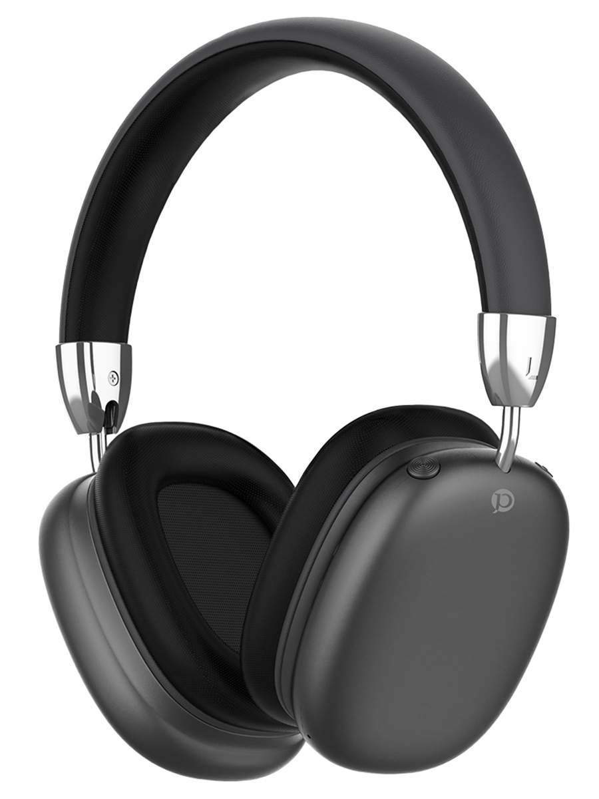
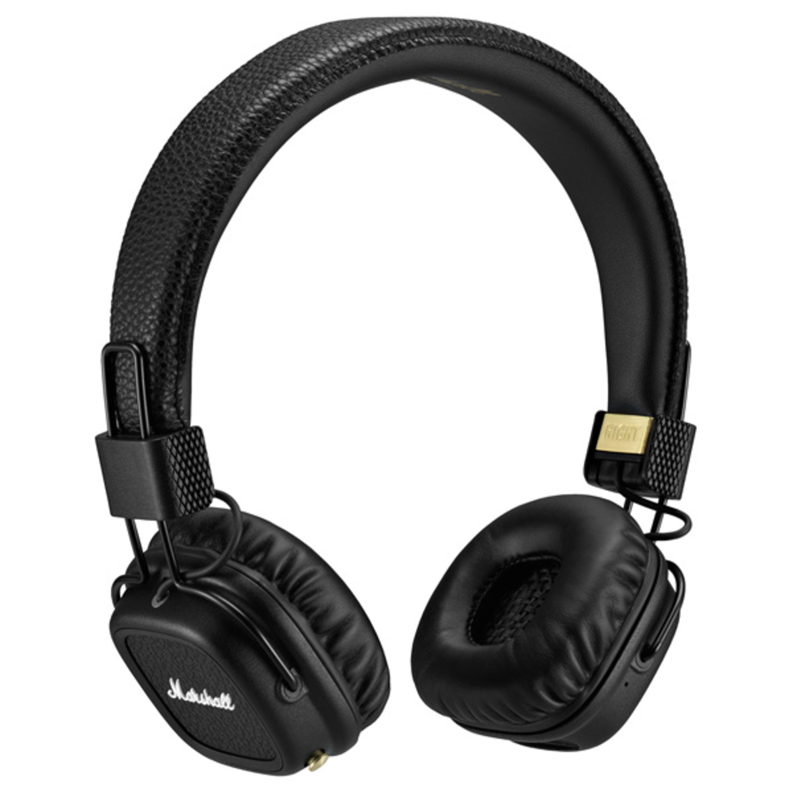
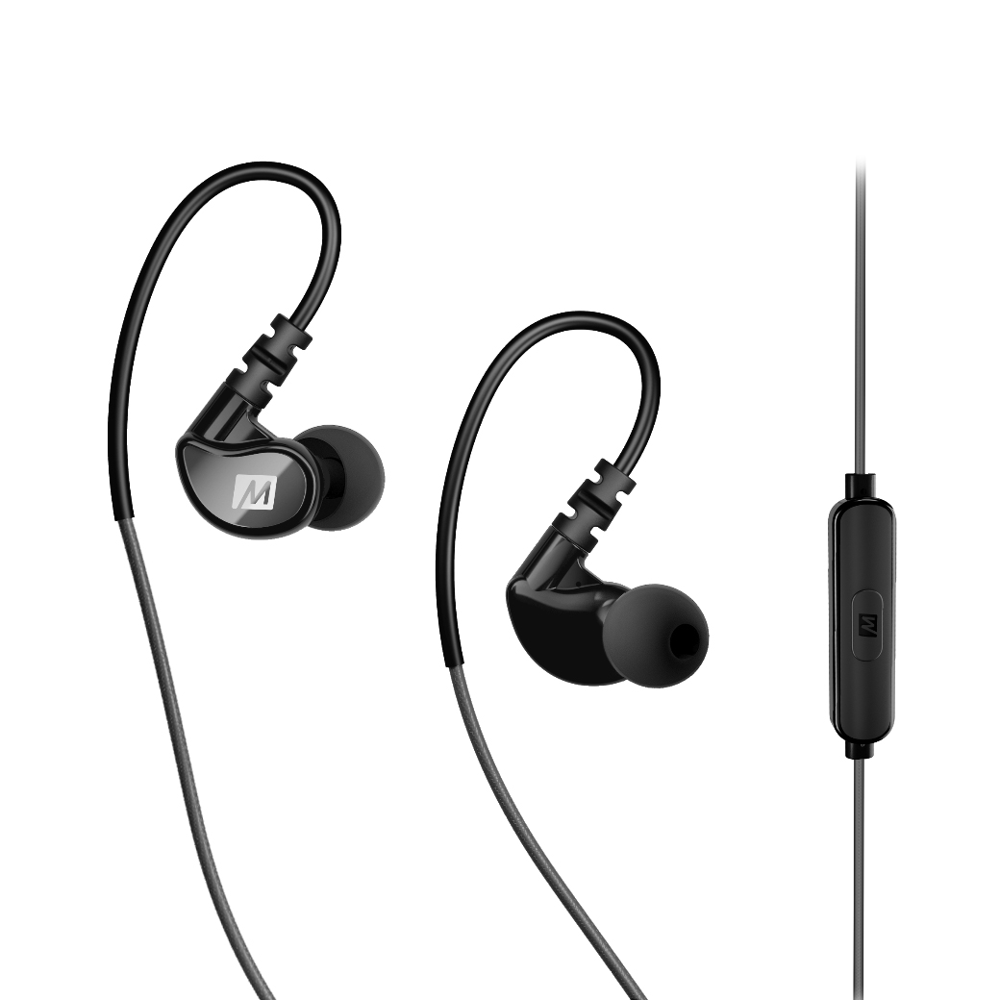
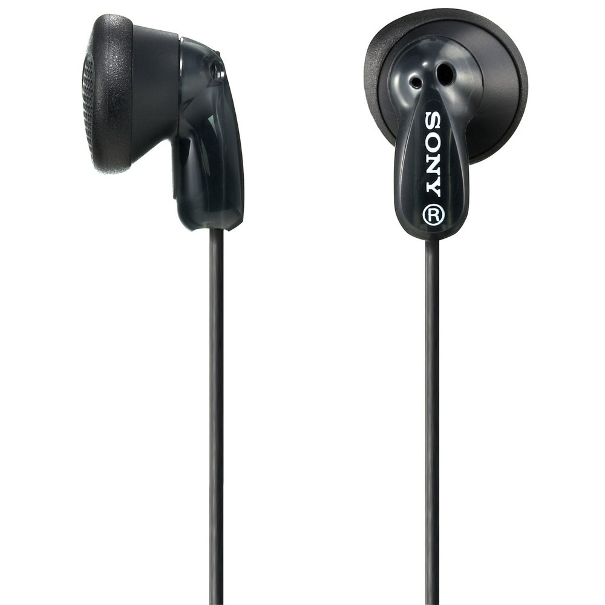
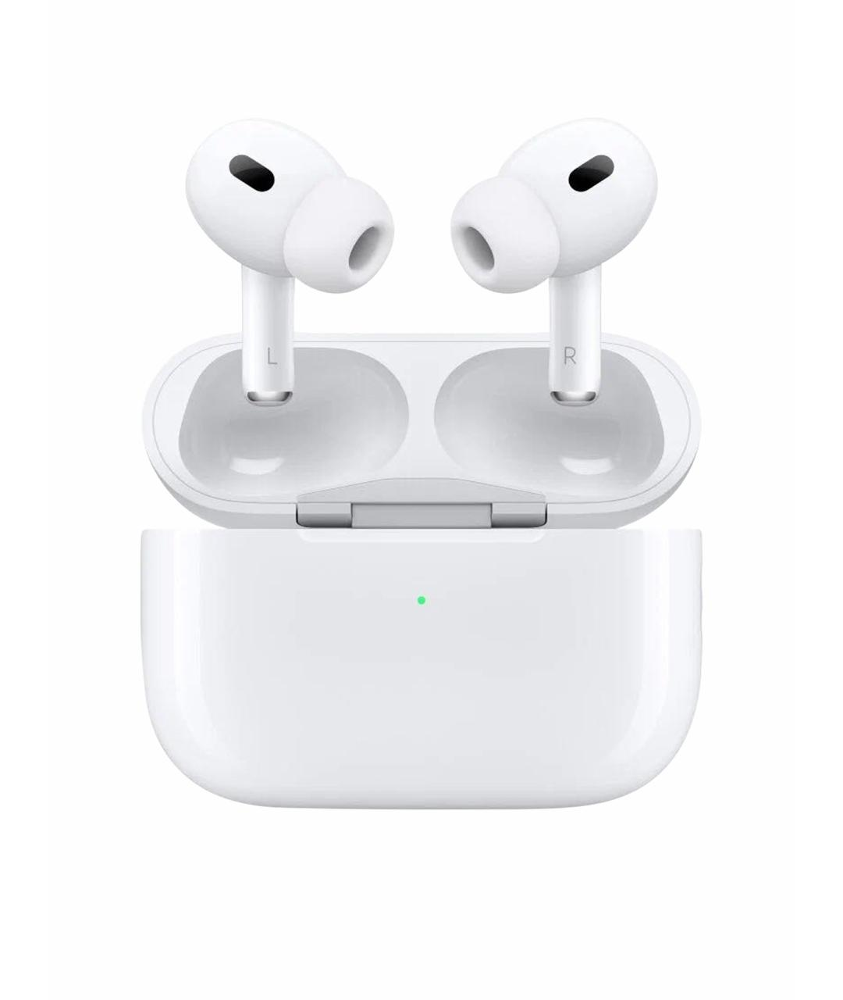

Типы наушников
Разбираемся в основных типах
наушников и их особенностях:
-
Полноразмерные (Накладные)

Охватывают ухо полностью,
обеспечивают хорошую звукоизоляцию и глубокий звук.
Идеальны для дома и студии. -
Накладные

Прижимаются к уху, компактнее полноразмерных,
но могут давить при долгом ношении.
Подходят для офиса и поездок. -
Внутриканальные (Затычки)

Вставляются в слуховой канал,
обеспечивают отличную шумоизоляцию и мобильность.
Лучший выбор для спорта и города. -
Вставные (Вкладыши)

Помещаются в ушную раковину, не герметизируют канал.
Лёгкие и удобные для повседневного использования. -
Беспроводные TWS (True Wireless Stereo)

Полностью беспроводные модели без кабеля между наушниками.
Максимальная свобода движений,
популярны для активного образа жизни.